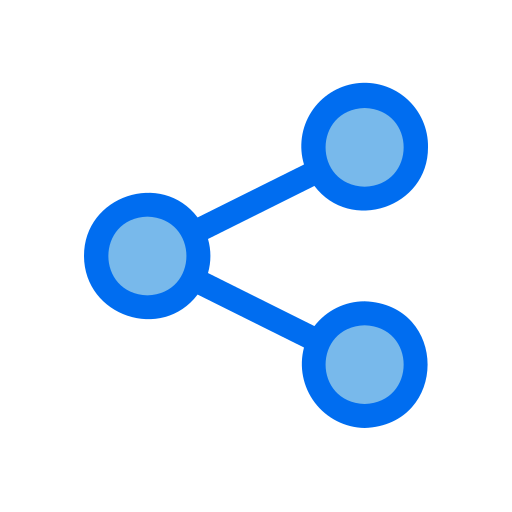
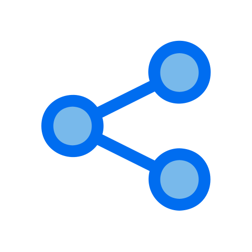

Блог от Life 5+
Выберите тему
Здоровый образ жизни
Польза зарядки утром
Утренняя зарядка – это прекрасный способ начать день с энергией и позитивом. Регулярные упражнения утром помогают улучшить общее самочувствие, повысить работоспособность и поддерживать тонус мышц ... На фоне современного образа жизни, когда большинство времени проводится в статическом положении за компьютером, зарядка становится необходимостью. Начните свой день с небольших физических упражнений, чтобы поддерживать свое здоровье и бодрость на протяжении всего дня.
 

Здоровый образ жизни
Рациональное питание для поддержания формы
Правильное питание – основа здорового образа жизни. Организм нуждается в балансе белков, жиров, углеводов, витаминов и минералов для поддержания функций органов и систем. Рациональное питание способствует не только поддержанию формы, но ... Правильное питание – основа здорового образа жизни. Организм нуждается в балансе белков, жиров, углеводов, витаминов и минералов для поддержания функций органов и систем. Рациональное питание способствует не только поддержанию формы, но
Здоровый образ жизни
Закалка и ее роль в здоровом образе жизни
Закалка - это метод, основанный на постепенном приспособлении организма к неблагоприятным условиям с целью укрепления иммунной системы и повышения общего тонуса организма. В блоге можно рассмотреть различные аспекты закалки, такие как:...
- Закаливание душем. Начните утро с теплого душа, затем постепенно увеличивайте время под холодной водой. Начните с нескольких секунд, постепенно увеличивая до 1-2 минут. Этот метод закаливания помогает укрепить иммунную систему и улучшить кровообращение.
- Гуляйте на свежем воздухе. Регулярные прогулки на свежем воздухе, особенно в парках или лесах, помогают организму привыкнуть к различным погодным условиям и укрепляют нервную систему.
- Плавание в холодной воде. Если есть возможность, попробуйте заниматься плаванием в открытых водоемах в периоды прохладной или холодной погоды. Это отличный способ закаливания всего организма и повышения его устойчивости к низким температурам.
- Контрастные души. Попробуйте принимать контрастные души, чередуя теплую и холодную воду. Это способствует улучшению кровообращения, укрепляет сосуды и дает заряд бодрости.
- Закаливание воздухом. Выходите на балкон или во двор на несколько минут каждый день, даже в прохладную погоду. Глубокие вдохи свежего воздуха помогут укрепить легкие и насытить организм кислородом.
Искусственный интеллект
Искусственный интеллект в медицине: преимущества и вызовы
В современной медицине искусственный интеллект (ИИ) играет ключевую роль, привнося множество преимуществ и вызовов. Одним из основных достижений ИИ является автоматизация диагностики с использованием машинного обучения. ... Это позволяет улучшить точность определения заболеваний и сократить время на обработку медицинских данных. Однако, помимо технических аспектов, стоит учитывать этические вопросы, такие как конфиденциальность данных пациентов и ответственность за принимаемые решения. Исследования в области медицинского ИИ продолжаются, и в будущем мы можем ожидать еще более значительных изменений в медицинской практике благодаря этой технологии.
Искусственный интеллект
Будущее транспорта: как искусственный интеллект меняет автомобильную отрасль
Автомобильная промышленность переживает значительные изменения под влиянием искусственного интеллекта (ИИ). Одним из самых ярких примеров являются автономные транспортные средства (АТС)... которые могут существенно улучшить безопасность дорожного движения и эффективность транспортных сетей. Использование ИИ также позволяет создавать умные системы навигации, оптимизировать маршруты и управлять потоками транспорта в режиме реального времени. Однако, внедрение таких технологий также влечет за собой вопросы безопасности и приватности данных, которые требуют серьезного внимания и разработки соответствующих нормативов.
Искусственный интеллект
Искусственный интеллект в образовании: новые возможности для учебного процесса
Развитие искусственного интеллекта (ИИ) открывает новые горизонты в образовании. Умные образовательные платформы и алгоритмы адаптивного обучения позволяют персонализировать образовательный процесс под каждого студента, учитывая его индивидуальные потребности и уровень знаний... Использование ИИ также способствует автоматизации рутинных задач преподавателей, что освобождает время для более качественного взаимодействия с учащимися. Однако, внедрение ИИ в образование также требует подготовки учителей и разработки этических стандартов, чтобы обеспечить эффективное и безопасное использование этой технологии в учебных заведениях.
Кибербезопасноть
Основы кибербезопасности: защита в онлайн-мире
В современном мире, насыщенном цифровыми технологиями, кибербезопасность играет важную роль в защите данных и личной информации. Основы кибербезопасности включают использование сильных и уникальных паролей для каждого аккаунта, регулярное обновление программного обеспечения и антивирусных программ, а также обучение пользователям основам безопасного поведения в сети... Важно также следить за подозрительной активностью на своих устройствах и сетях, реагировать на подозрительные запросы и сообщения, чтобы избежать попадания в сети киберпреступников.
Кибербезопасноть
Тренды в кибербезопасности: вызовы и новые решения
Современные тренды в кибербезопасности отражают растущую сложность угроз и вызовы, с которыми сталкиваются организации и частные лица. Распространение облачных технологий и интернета вещей (IoT) увеличивает поверхность атак и требует более сложных решений в области безопасности ... Технологии искусственного интеллекта и машинного обучения используются для обнаружения и предотвращения кибератак, а также для анализа больших объемов данных для выявления аномалий и угроз. Безопасность сегодня требует комплексного подхода, включающего в себя не только технические средства, но и обучение персонала и разработку стратегий реагирования на инциденты безопасности.
Кибербезопасноть
Кибербезопасность в бизнесе: защита данных и стратегии безопасности
Для бизнеса кибербезопасность становится важным элементом защиты
корпоративных данных, интеллектуальной собственности и операционной деятельности. Реализация
эффективных стратегий кибербезопасности включает в себя оценку рисков...
разработку политики безопасности, использование многофакторной аутентификации, шифрование
данных, мониторинг сетевой активности и обучение персонала правилам безопасности.
Безопасность важна не только для предотвращения угроз, но и для поддержания доверия клиентов
и партнеров к бизнесу, что является ключевым аспектом успешной деятельности в цифровой
среде.